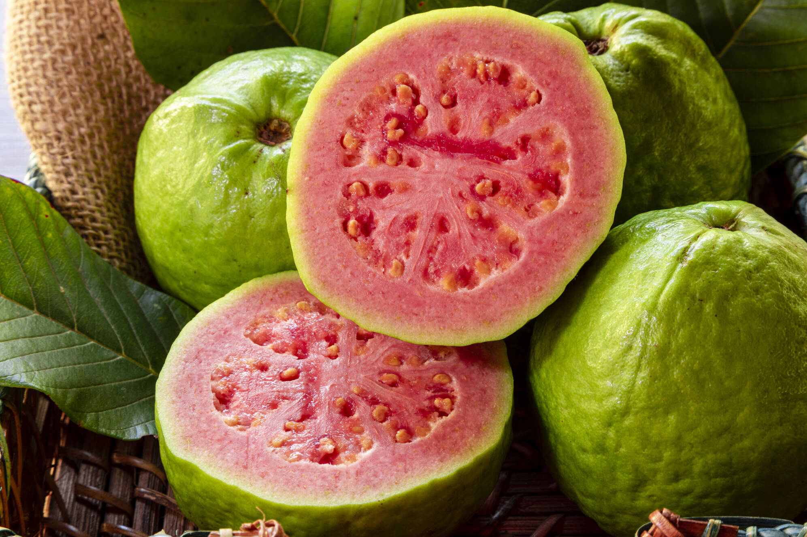
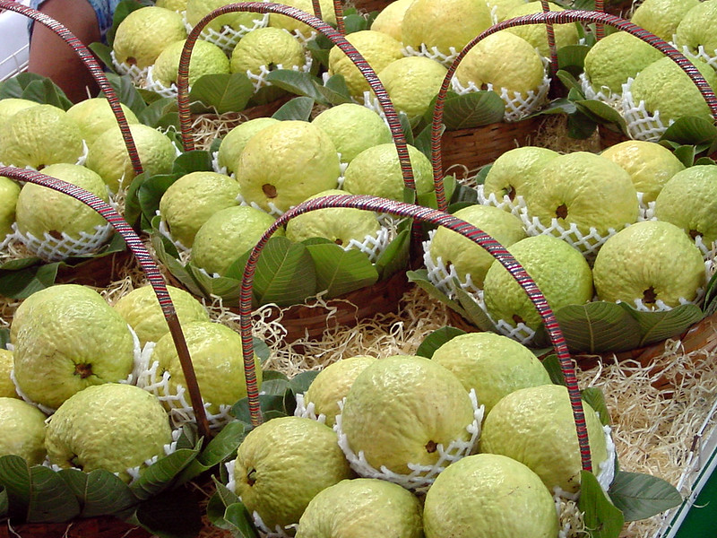

Bem-vindo ao Goiaba Center
Explore o mundo da goiaba, uma fruta tropical deliciosa e cheia de benefícios para a saúde. Aqui, você encontrará tudo sobre a goiaba e sua importância na nossa cultura e economia.
Destaques
Descubra as curiosidades sobre a goiaba e conheça os principais produtores da região de Carlópolis, a capital nacional da goiaba.

Explore Mais
Aprenda sobre a história da goiaba, suas propriedades nutricionais, e como ela se tornou um dos pilares da economia no Norte Pioneiro Paranaense.
